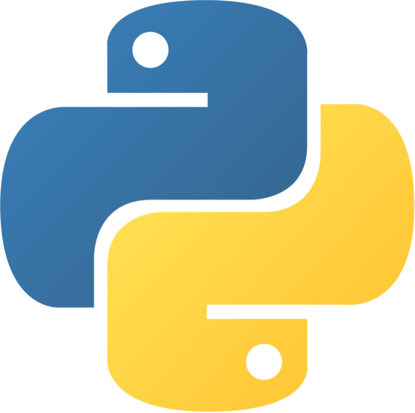
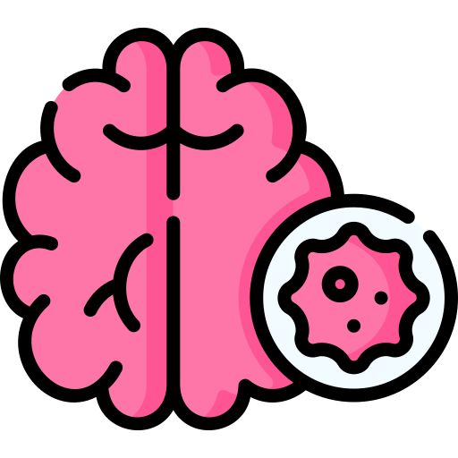
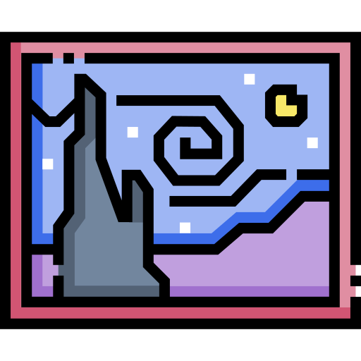

I'm an undergraduate student at UC San Diego studying machine learning and data science.
As someone who is passionate about problem-solving and artificial intelligence,
I am eager to learn new relevant skills and technologies.
I've gone from having no experience to building transcriptomic clustering pipelines
as a computational research assistant, educating over 700 students on practical
data science in Python for UCSD's upper division courses,
and designing novel anomaly detection algorithms as an intern at Ericsson.
My primary interests lie in developing agents that can learn from and adapt to novel
information via general learning methodologies across domains such as NLP, CV, and RL.
To kick back, I enjoy trying new foods, playing my violin, and boardgaming with friends and family!
Experience
AI/ML Intern
@ Ericsson
JUN 2024 - PRESENT
Developed a time series forecasting model achieving <10% error for predictions on traffic data
across customer data centers, thereby significantly improving predictive analytics capabilities
Designed and implemented a context-aware ensemble-based anomaly detection system utilizing
autoencoders, correlation analysis, and LogBERT, leading to a 96% reduction in issue identification time
Enhanced AI model management by building a user-friendly interface using Flask/Rest API, streamlining
integration and usability
Platform Engineering Intern
@ Nokia
JUN 2023 - AUG 2023
Spearheaded the solution designing and implementation of a router topology editor in Python
Created custom tools and scripts to facilitate editor configuration management,
error tracking, and intuitive platform design
Contributed to the creation of user stories, sprint planning, and weekly sync-up
meetings, ensuring seamless coordination and rapid project delivery
Developed scalable systems development knowledge in Git, Python, and Linux
Machine Learning Intern
@ San Diego Supercomputer Center
FEB 2023 - PRESENT
Collaborating with a team of 5 peers to develop guides for effectively running
ML and data science applications on advanced cyberinfrastructure (CI) and high-performance
computing (HPC) systems
Developed and delivered comprehensive research tutorials for the Cyberinfrastructure-Enabled
Machine Learning (CIML) project, empowering researchers with effective prompt engineering practices
to optimize Copilot, ChatGPT, Gemini, and other LLMs
Conducted thorough assessments of current LLMs, exploring their capabilities and limitations in
the context of data science and machine learning tasks
Generating research tutorials for single- and multi-GPU resource management when using PyTorch,
PyTorch Lightning, and Tensorflow for fine-tuning and feature extraction of deep learning applications
Instructional Assistant
@ UCSD
SEP 2023 - PRESENT
Supported classroom instruction via bi-weekly sessions,
teaching key Python libraries for data analysis and visualization
in upper-division computation courses
Delivered 4 lectures on an introduction to machine learning techniques and ethics
Mentored and offered hands-on guidance to 700+ students
on Python homework assignments and data science projects
Collaborated with professors and rest of the teaching team
to formulate questions for quizzes and exams
Professional Events Director
@ Data Science Student Society
JUN 2024 - PRESENT
Led a team of eight undergraduates to host events promoting
professional skill development and application through panel
discussions, workshops, and networking sessions with industry partners
Building and maintaining professional relationships
with sponsors, industry professionals, and faculty across
many departments
Planned and executed five events over the Fall 2024 quarter
ranging from soft-skills workshops, resume reviews, and a faculty mixer,
amassing 120+ student attendees
Professional Events Team Member
NOV 2023 - JUN 2024
Worked in small team of undergraduates to host soft
skills workshops, panel discussions with industry
partners, and casual events with HDSI faculty
Attracted a total of 65 attendees across all events,
promoting community-building within data science at UCSD
Exposing students to the diverse sectors of the data
science field and provide them with a comprehensive
understanding of industry applications and career pathways
Research Assistant
@ Bambah-Mukku Lab
MAR 2022 - DEC 2023
Conducted a comprehensive examination and dissection of hypothalamic POA neuron
clusters identified by the novel taxonomy presented in J. Moffitt, D. Bambah-Mukku et al. (2018)
Developed an R-based pipeline using Seurat that leveraged unsupervised clustering techniques
and differential gene expression (DEG) analysis to explore potential sub-clusters within those
identified in the aforementioned study
Vice President
@ Triton Gaming
MAY 2024 - PRESENT
In charge of streamlining cross-committee logistics and communication
between board of 6 directors and 90+ officers of the
largest collegiate gaming organization in the West Coast
Secured $10K in funding through grant proposals and presentations amidst
university budget cuts to continue hosting events at a capacity
rivaling previous years
Provided pivotal guidance for decisions surrounding organization events,
internal matters, and external matters
Finance Director
@ Triton Gaming
JAN 2023 - PRESENT
Oversees management of financial records and databases,
budgeting, organization bank account, and financial decision-making
Devised an automated budget tracking system using excel for
TGEX 2023 and 2024, our flagship annual event; managed budgets
of $20K and $35K, respectively.
Producing event analytics using Pandas and Seaborn to
provide valuable insights to partners for improving future
marketing strategies and sponsorships
Projects
Marijuana Biomarkers
Case study in R that leveraged data from 191 subjects to determine
a reliable compound, cut-off, and matrix for recent use.
See More
Supervised ML Survey

Performance analysis of various supervised ML algorithms implemented
from scratch and compared across multiple datasets.
View Paper
Brain Tumor CNN

Implemented a BrainMRNet-inspired brain tumor model classifying
fMRI images into one of four tumor classes, reaching 93% test accuracy.
View Paper
Interpretable NST

Conducted thorough exploration of common NST parameters
and proposed a revised algorithm capable of producing more visually-appealing results.
View Paper
Post-2020 Tech Layoffs
Data analysis exploring the recent international wave of mass layoffs across various industries, especially tech.
See More
Heart Disease Models
Determined predictors of heart disease using data
from 253,680 individuals to implement a model that achieved
77% test accuracy.
View Paper
Skills
Programming Languages
Python
JavaScript
R
mySQL
HTML5/CSS
Libraries & Frameworks
PyTorch
Scikit-learn
NumPy
Pandas
OpenCV
OpenAI Gym
Matplotlib
tidyverse
Tools & Technologies
Anaconda
Git
Tableau
Jupyter
RStudio
G-Suite
MS Suite
VSCode
Site made from scratch with HTML5/CSS and Javascript. The
code
for this is on my Github page.